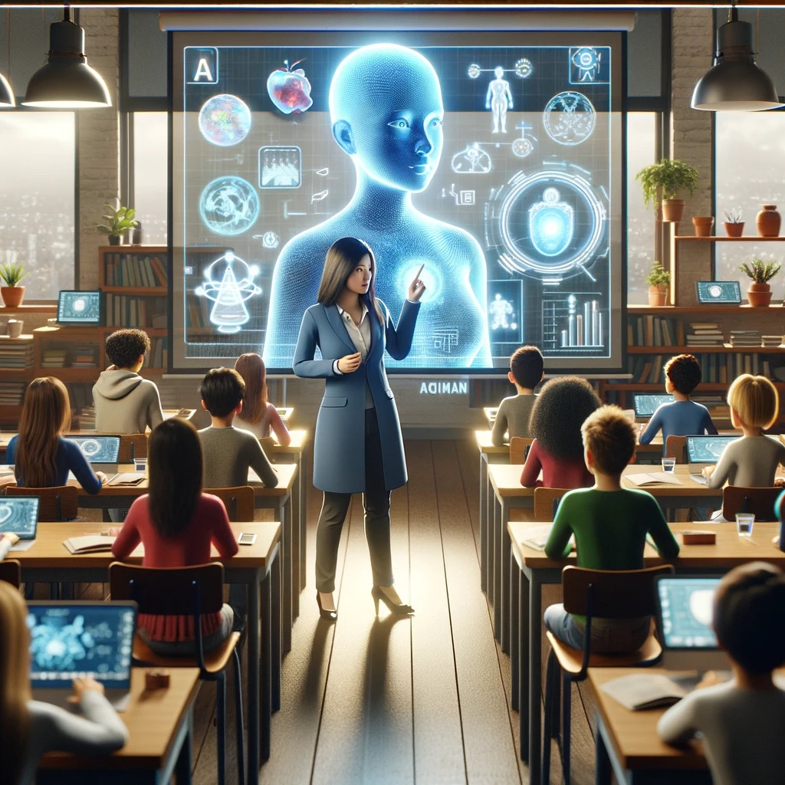
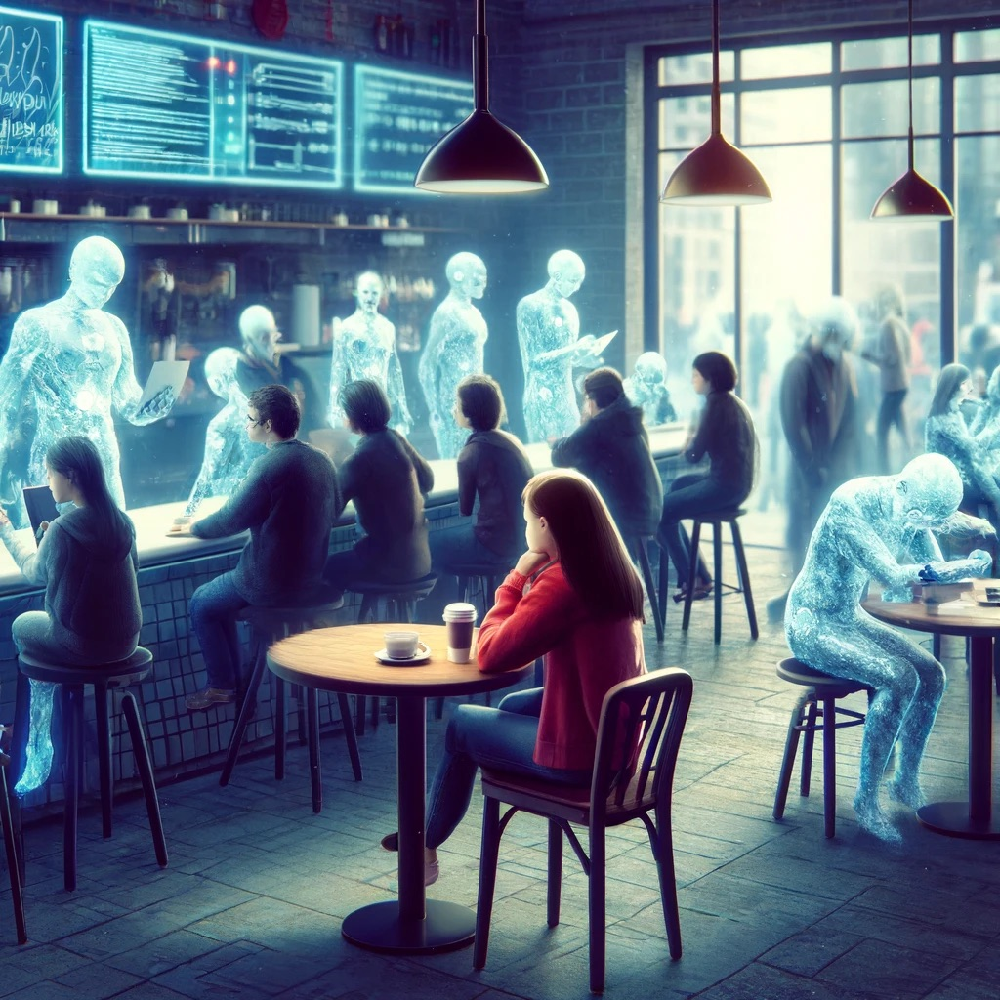

AI-powered Digital Twins of Humans: A Look at the Future
Introduction:
The concept of digital twins, virtual replicas of physical systems, has been around since the early 2000s in product lifecycle management. The marriage of AI and digital twins for humans, however, is a relatively new frontier.
What is it?
An AI-powered human digital twin is a comprehensive digital representation of an individual. It goes beyond just physical appearance and incorporates biological data (genetic makeup, health information), behavioral patterns (purchasing habits, social media activity), and even environmental factors (location, wearable sensor data). AI helps analyze this data and allows the twin to learn and adapt, potentially predicting future health risks, suggesting personalized interventions, or even acting as a virtual assistant.
Benefits:
- Personalized Medicine: Digital twins can be used to simulate the effects of medications and treatments on a virtual patient, allowing for more targeted and effective healthcare approaches.
- Enhanced Research: Researchers can use digital twins to model complex scenarios, from drug development to city planning, leading to more informed decisions with minimized real-world risks.
- Productivity Optimization: Imagine a digital twin that manages your schedule, conducts research for meetings, or even represents you in virtual conferences, freeing up valuable time for more critical tasks.
Potential Harms:
- Privacy Intrusion: Creating an accurate digital twin requires a vast amount of personal data, raising concerns about data security and potential misuse of this sensitive information.
- Bias and Discrimination: Digital twins are built on data, and data can be biased. These biases could be reflected in the twin's behavior, leading to unfair treatment or discriminatory outcomes.
- Loss of Control: As digital twins become more sophisticated, the line between human and machine blurs. Concerns arise about who controls these digital representations and how they might be manipulated for malicious purposes.
Unique Business Models:
- Personalized Wellness Coaching: Digital twins could be used to create personalized wellness plans, recommending diet, exercise, and lifestyle changes based on individual health data and risk factors.
- Preemptive Healthcare: By predicting potential health issues, digital twins could enable early intervention and preventive treatments, reducing overall healthcare costs.
- Virtual Reality Training: Imagine using your digital twin in a virtual reality environment to practice job interviews, public speaking, or even surgery simulations.

Potential Positive Consequences of Digital Twins of Humans (Enhanced Learning)

Potential Negative Consequences of Digital Twins of Humans (Social Isolation)
Conclusion:
The development of AI human digital twins is still in its early stages. While the potential benefits are vast, ethical considerations and clear regulations are crucial to ensure responsible use and protect individual privacy. As this technology evolves, it will be fascinating to see how it shapes the future of healthcare, research, and even how we work and interact with the world around us.
Video Link:
Citations:
Essay: Tool - Google Gemini
Prompt: "Introduce the concept of AI Digital Twins of humans. Write about its history, explain traditional societal viewpoints towards it, and talk about its potential for future applications."
Date: 4/25/24
Image 1: Tool - OpenAI DALL-E 3
Prompt: "Create an image depicting the positives of AI Digital Twins of humans."
Date: 4/25/24
Image 2: Tool - OpenAI DALL-E 3
Prompt: "Create an image depicting the negatives of AI Digital Twins of humans."
Date: 4/25/24
Video: Tool - HourOne, script from Gemini
Prompt: "Generate a script explaining AI Digital Twin of humans, their potential positives and potential negatives for society, and identify unique business models."
Date: 4/25/24